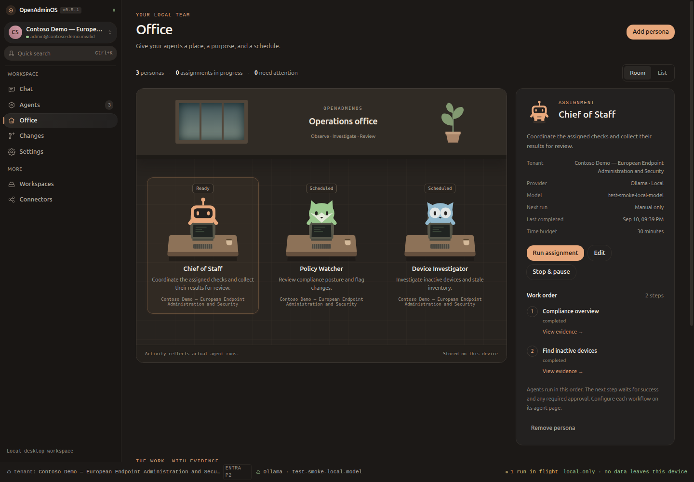

IMPLEMENTED DESIGN REFERENCE · 22
Office
Persistent personas, real execution states, and an evidence-linked briefing.
Room
List
Persona editor

The actual Electron renderer after a completed two-agent assignment. All tenant data in this reference is synthetic.